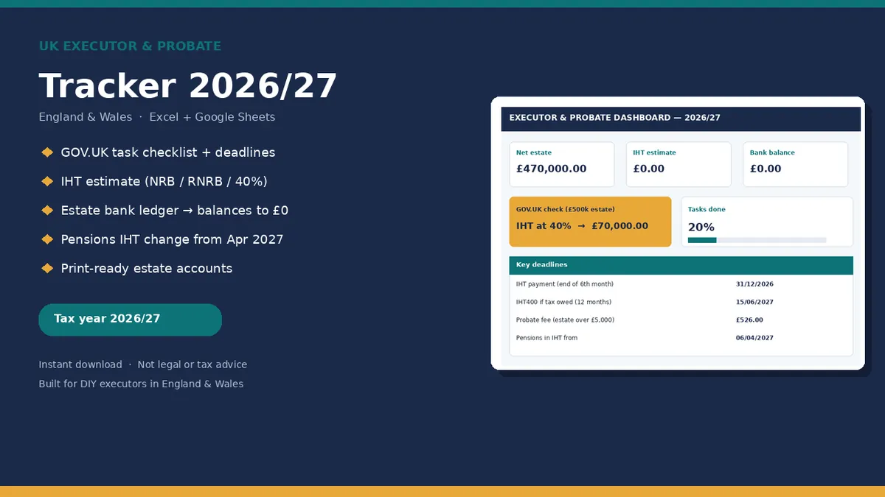

Probate
UK Executor and Probate Tracker 2026/27 (England and Wales)
As an executor or administrator you are suddenly responsible for registering the death, valuing the estate, checking Inheritance Tax, applying for probate, paying debts and sharing out what is left. This workbook is for doing that yourself, with every rate and fee linked to its GOV.UK source.
PRICE ON GUMROAD£19.99
Buy on GumroadEstimate, not legal or tax advice. England and Wales only. Business Relief, Agricultural Relief, taper relief on lifetime gifts and the full IHT400 are not modelled. If the estate is complex, talk to a solicitor.

Who it's for
- Named executors under a will, or administrators applying without one, in England and Wales.
- People making a personal probate application who want one place for tasks, money and accounts.
- Families who want clear estate accounts for beneficiaries to review and sign.
What's included
- Dashboard: net estate, IHT estimate, days to the IHT payment deadline, task progress, estate bank balance and a probate fee helper.
- Tasks: a checklist following GOV.UK's steps for what to do when someone dies.
- Assets & Debts: date of death values, sole or joint, and a flag for assets that pass outside the estate.
- Pensions & Policies: contacts, chase dates and a flag for the 6 April 2027 IHT on pensions change.
- IHT Estimate: nil rate band, residence nil rate band, transferred percentages and the 36% charity rate, plus GOV.UK's worked example (£500,000 estate, £70,000 tax) to check against.
- Estate Bank Ledger: money in, money out and a running balance.
- Income and Expenses during administration, including the £526 probate fee and copy fees.
- Distributions: specific legacies, interim and final residue payments.
- Estate Accounts: a print ready summary with sign off lines for beneficiaries.
- Contacts, Rates & Sources and pink EXAMPLE rows you delete when ready.
An .xlsx download that works in Excel, Google Sheets and LibreOffice. No macros.
What it isn't
- Scotland or Northern Ireland.
- Estates with trusts, foreign assets, contested wills, missing beneficiaries, or Business or Agricultural Relief claims. Use a solicitor for those.
- Anyone who wants software that files to HMRC or the probate service.
Preview
Free calculator
Want a quick figure first? No sign up.
Executor and probate tracker £19.99 on Gumroad
Estimate, not legal or tax advice. England and Wales only. Business Relief, Agricultural Relief, taper relief on lifetime gifts and the full IHT400 are not modelled. If the estate is complex, talk to a solicitor.
More templates
- CIS subcontractor tracker £14.99
- CIS contractor tracker £14.99
- Mileage and expenses log Lite Free, pay what you want (£0+)
- Both sides of CIS bundle £21.99
- Gifts and IHT 7 year tracker £12.99
- Freelancer time, invoice and late payment tracker £14.99
- Sales dashboard and VAT threshold watch £12.99